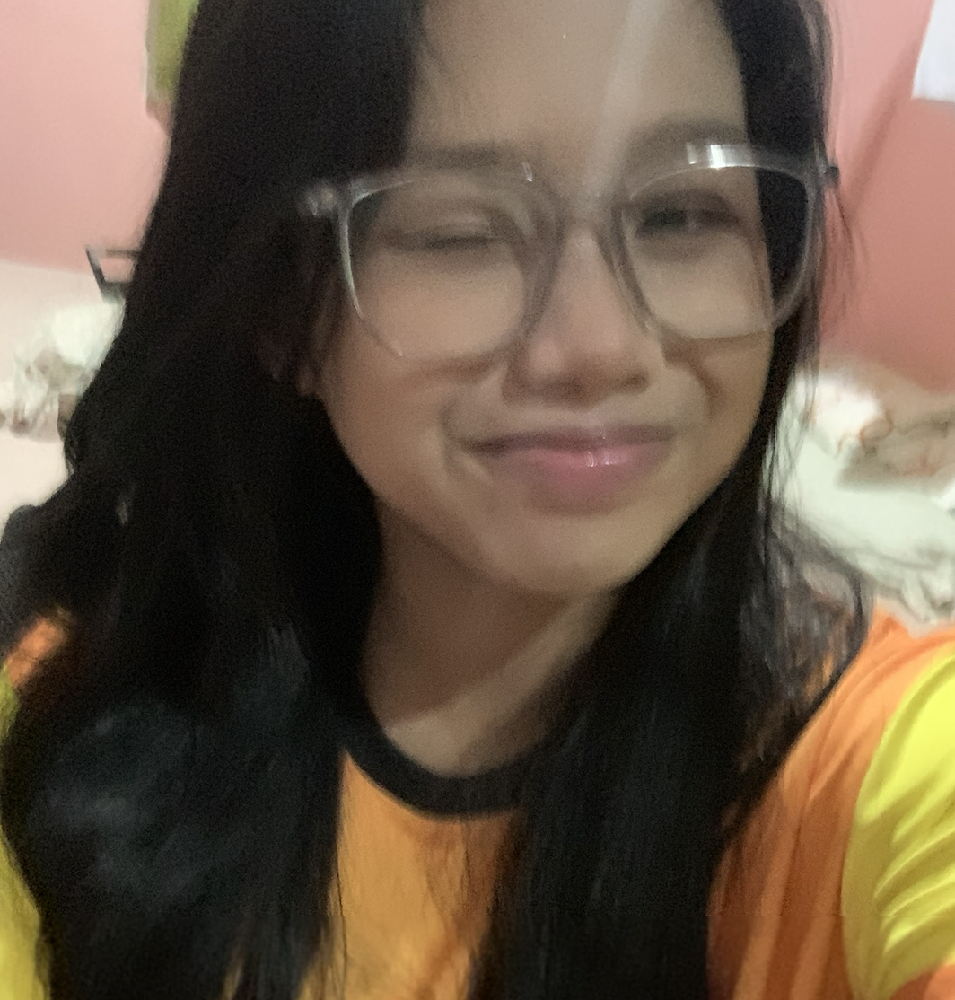

RESEARCHERS

Hi, I'm Sofia Dalaorao and you can call me Shire or Pia. I am currently a 9th grader from section Sodium in Philippine Science Southern Mindanao Campus. I was born on November 8, 2008, and I am the youngest of my siblings. I have always dreamed of becoming a medical professional specializing in neurology since I was young. I was always amazed at how powerful and great human brains are. I also want to study more about about human brain to further understand the condition of my brother. Aside from having a dream career, I also like to perform around people like singing. Even though I'm not a great performer, I always give my best for the group and especially for myself.
Myself in Academics:
- I was a consistent high honor student from preschool to grade 6.
- I have never joined any academic-related competitions.
- I had poor study habits in elementary like only studying when exams were near or when there were recitations..